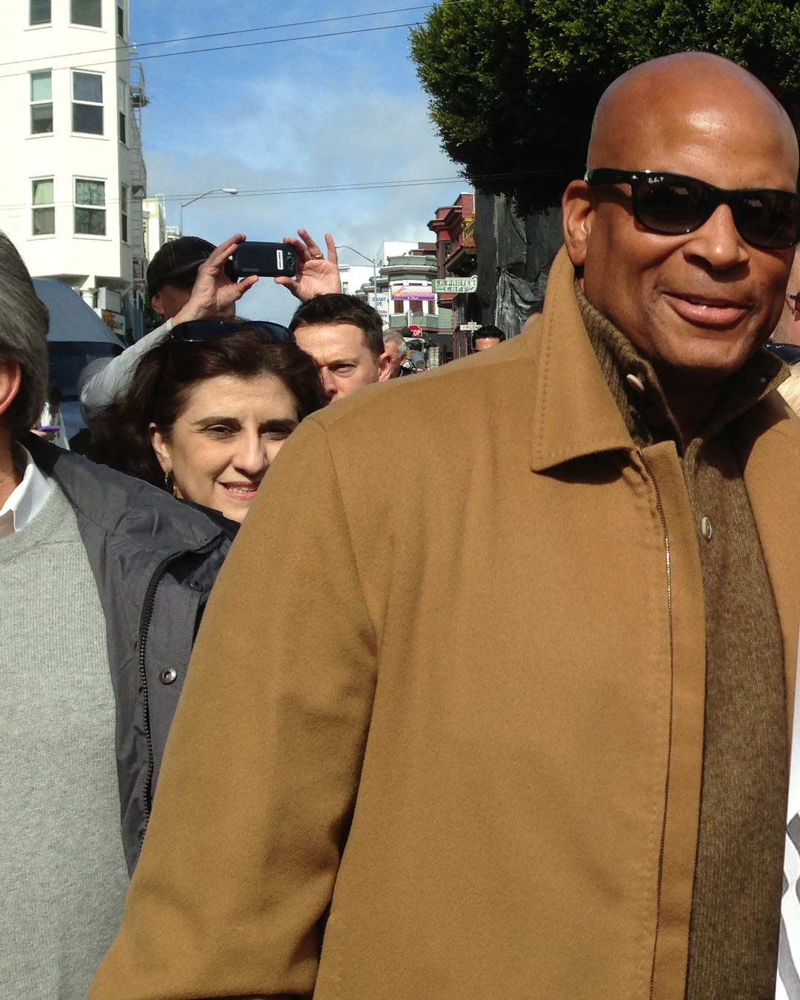
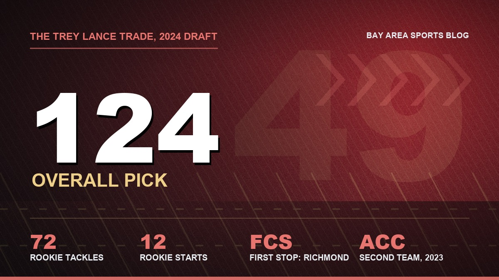
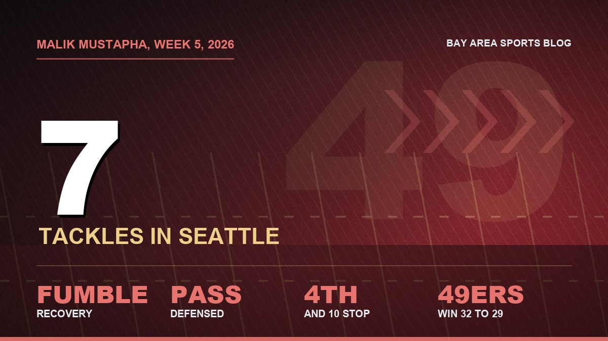

Malik Mustapha Is a Heat Seeking Missile. The League Should Learn His Name.
I've watched a lot of safeties in this town. When this kid comes downhill I get the same feeling in my stomach I got watching 42. Somebody's about to have a bad afternoon.

Fourth and 10. Fifty four seconds left in Seattle. Cooper Kupp catches it at the sideline, slips a tackle, and dives for the marker, and the whole season is hanging off the end of his fingertips.
Then a 49ers safety hits him like he owes him money.
I was standing in my living room with both hands on top of my head. My group chat was going off and I couldn't look at it, because they were reviewing it and I'd stopped breathing. They spotted it short. The call stood. And the guy who drove one of the best receivers of his generation out of bounds a yard shy of the sticks, in the loudest building in football, was a fourth round pick who started the season as a backup.
His name is Malik Mustapha. Some of you already know it. The rest of the league needs to learn it, because this kid is a heat seeking missile in a gold helmet and he's just getting started.
A poor man's Ronnie Lott, and I'll defend it
Look, I know. You don't throw that name around in this town. Ronnie Lott is a religion here. Four rings, the Hall of Fame, the guy who had the tip of his pinky cut off rather than miss time. Nobody gets compared to Ronnie.
So I'm putting the word poor in front of it on purpose. Mustapha isn't Lott. Nobody is. But when I watch him come downhill on a running back I feel the same thing in my stomach I felt as a kid watching 42, which is that somebody on the other team is about to have a really bad afternoon. He doesn't tackle people so much as arrive on them. Fast, low, mean, and every single snap like it's personal.

He even talks about it the way Ronnie used to. Somebody asked him this week what game day feels like and he called it an out of body experience. "Once I put that armor on, it's like we're going out to battle." I read that twice and went and watched the Kupp play again.
Nobody wanted this kid
What I love most about him starts here. He was 5 foot 2 and 115 pounds as a freshman at Weddington High School outside Charlotte. A hundred and fifteen pounds. He started out on the offensive line in Pop Warner and his first football memory is tackling the guy he was supposed to block.
His mom, Dee Myles, used to drive him to camps anywhere within four hours of home, and she's the one who pushed him to defense. Her reasoning? She figured he'd have more fun hitting people. Ma'am, you were right. You were so right.
He grew eight inches and put on 70 pounds, and Wake Forest still gave the scholarship to somebody else. So he went to Richmond, an FCS school, for one season, then transferred to Wake through the portal and made them regret it. He tore his ACL in the Gator Bowl, came back and led the team in tackles, then put up 80 as a senior and made second team All ACC.
And get this. He grew up a Niners fan. Frank Gore was his guy, from watching him on TV and playing him in Madden. His mom was a Cowboys fan who switched over. Which makes it even funnier how he got here.

The best thing the Trey Lance trade ever gave us
The 124th pick in the 2024 draft belonged to the Cowboys. They sent it to us for Trey Lance. I'm not going to relitigate the Lance deal, I don't have the heart, but if you'd told me the one good thing to come out of that whole saga would be a hard hitting safety from Charlotte who grew up wearing our colors, I'd have taken it in a heartbeat.
He wasn't supposed to play much as a rookie. Then Talanoa Hufanga got hurt, Mustapha got his first start in Week 4, and two weeks later he picked off Geno Smith in Seattle for his first career interception. When Hufanga came back in December, Mustapha kept the job. Seventy two tackles, twelve starts, tied for eighth among all rookies in tackles. As a fourth rounder.
Then the knee went again
The last game of that rookie season, the knee he'd torn in college gave out again. He needed surgery in January to repair the ACL graft, and he started 2025 on the PUP list.
I'm not going to pretend last year was great. He came back in October and played, 76 tackles and a pick, plus 11 tackles and a sack in two playoff games, but some nights he didn't look like the same guy. A step slow. Thinking instead of flying. People started calling it a regression and I got defensive about it at work, and I'll admit part of me wondered if the knee had taken the missile out of him.
It didn't. It just took a year.
Two weeks, two games saved
He pulled a hamstring in training camp this summer and opened the season in a three man rotation with Ji'Ayir Brown and Marques Sigle. A tackle here, a few there. Then Sigle sprained his ankle, a high ankle sprain, and Mustapha got the start in Seattle.
Seven tackles. A pass defensed. When Fred Warner punched the ball loose at the Seattle 11, it was Mustapha who fell on it, and Christian McCaffrey scored on the very next snap. Then the Kupp play to end it. Five and oh.

Eight days later, Monday night against Washington, he did it again. He stuffed Jeremy McNichols for no gain on a third and 3. And then with 1:54 left, fourth down from our 17, Jayden Daniels threw it to Treylon Burks in the end zone. Burks went up. For one horrible second I thought he had it. Mustapha tore it out of his hands before he hit the ground. Incomplete. Six and oh.
Two straight weeks the game came down to one play, and two straight weeks the ball found the backup safety. Call it luck if you want. I think quarterbacks are going to stop throwing at him pretty soon.
What changed
He's on his third defensive coordinator in three years, and he says Raheem Morris is the one who flipped the switch. Morris and his DB coach, Jerry Gray, told him the thing everybody already knew, that he's a menace against the run, and then asked him to bring that same nastiness into coverage. Read the quarterback and go. Don't switch your brain off between run downs and pass downs.
"Trust our instincts, trust our game plan, trust our technique," is how he put it. He called having a coach who trusts him that much a confidence boost.
You can see it. Last year he was hunting for the ball carrier and sometimes guessing. This year he's hunting for the ball. Three passes defensed and a fumble recovery in six games, 20 tackles, and those numbers are going to climb now that he's on the field every snap. This defense is the reason we're six and oh, and he's turned into one of the guys you can't take off the field.
Learn the name
He's of Nigerian descent, he's 24, he's a zero star recruit who got passed over by the school he ended up starring for, he's had his knee rebuilt twice, and he's playing like a guy who remembers every single one of those slights. That's the kind of player who terrifies the other sideline. Receivers start hearing footsteps. Running backs start going down a half second early.
Sigle will be back at some point and I'm sure Kyle and Raheem will find a way to keep all three safeties happy. I just know which one I'm watching on Sunday in Atlanta. Some fans have already started calling him Malik the Missile.
I'd like to get that on a shirt. Somebody please make it before I have to.
More on this team: the Seattle win and the Kupp stop, six and oh on Monday night, the full 2026 roster and depth chart, the 2026 schedule hub, and our Ronnie Lott Hall of Fame page.
More coverage: 49ers · NFL · Bay Area Sports Blog home